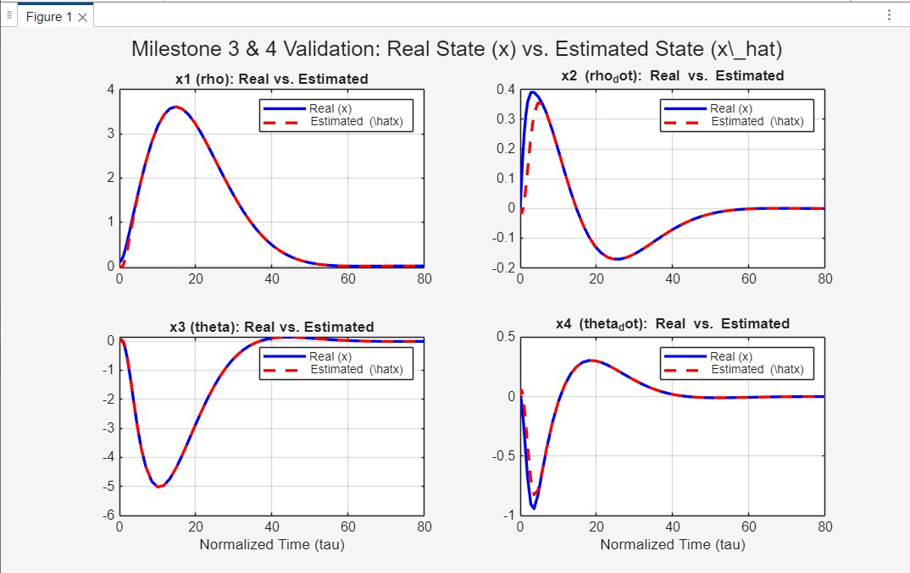
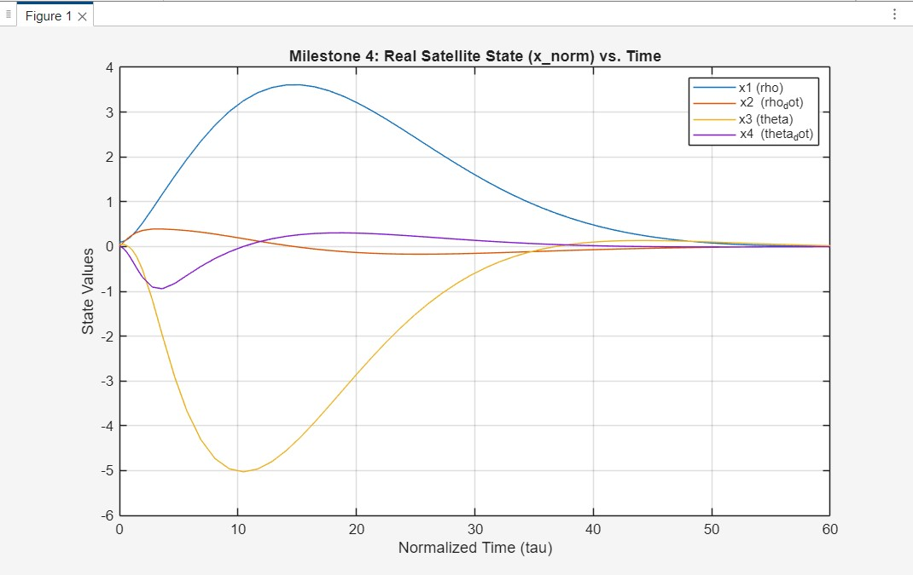
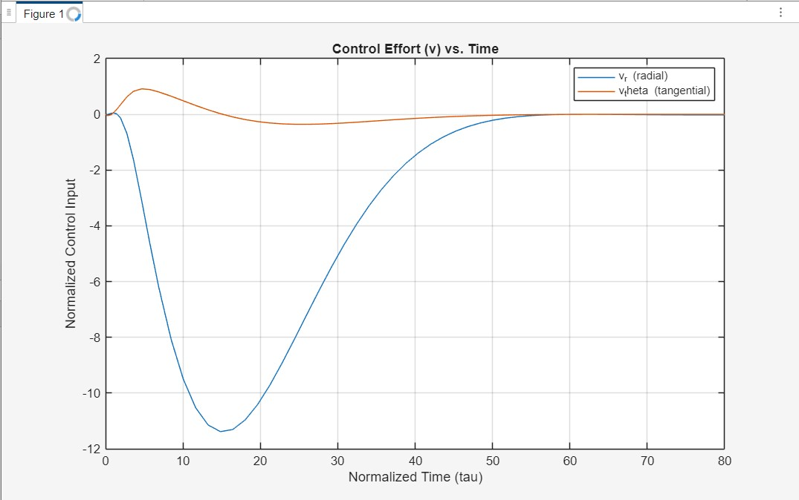

Luenberger-Based Rendezvous Control with Angle-Only Data
Academic Project | Control Systems Theory & Simulation
Download Full Report (PDF)1. Context & Engineering Problem
Orbital rendezvous (docking) is an essential maneuver requiring precise control of a satellite's 4 relative states (radial/angular position and velocity) to bring them to zero. The central engineering challenge is an **output feedback problem**:
- Full State Required: The controller needs all 4 states: $x = [r, \dot{r}, \theta, \dot{\theta}]^T$.
- Limited Measurement: The sensors only provide a single measurement: the angle $y = \theta$.
- Unobservable States: All velocities ($\dot{r}, \dot{\theta}$) and the radial position ($r$) are unknown.
Critical Discovery: Initial analysis revealed the physical model (using meters, seconds) was numerically ill-conditioned, producing physically unrealizable controller gains of $10^{15}$. This problem was solved via **system normalization (non-dimensionalization)** before design.
2. Objective & Separation Principle
The primary objective was to design, simulate, and validate a complete autopilot system (controller + observer) capable of stabilizing the satellite ($x(t) \to 0$) based *only* on the angle measurement.
The technical solution relies on the **Separation Principle**:
- Design a Luenberger Observer ($L_{norm}$) to estimate the full state $\hat{x}$.
- Design a State-Feedback Controller ($K_{norm}$) to pilot the system.
- Validate that the final control law $u = -K_{norm}\hat{x}$ (using the *estimated* state) successfully achieves rendezvous.
3. Validation Milestones
Feasibility Analysis
Proved the system is both Controllable and Observable from $y=\theta$. The problem is solvable.
Result: Achieved
Robust Gain Design
Calculated stable $K_{norm}$ and $L_{norm}$ gains after normalization (Observer 10x faster than Controller).
Result: Achieved
Observer Validation
Simulation proved estimation error $\tilde{x}(t) \to 0$. The observer successfully tracks the real state.
Result: Achieved
Full System Validation
Simulation proved the satellite's real state $x(t) \to 0$. The rendezvous maneuver was successful.
Result: Achieved
4. Simulation Results Gallery



.jpg)

5. Conclusion
The project was a complete success. We demonstrated that an autopilot for orbital rendezvous can be designed using only a single angular measurement. The analysis revealed that **system normalization** was a critical, non-negotiable step to overcome numerical instability and achieve a robust, physically realistic design. Final validation confirmed the (Observer + Controller) architecture successfully stabilizes the satellite and achieves rendezvous.
6. Future Work (Logical Next Steps)
This report serves as a proof-of-concept for the 2D linear model (4 states). The logical future work is to extend this solution to the full, non-linear, 6-Degree-of-Freedom (6-DOF) problem.
- 13-State Modeling: Utilize the full state vector (3D position, 3D velocity, 4 attitude quaternions, 3 angular velocities).
- Non-Linear Estimator: Replace the linear Luenberger Observer with an Extended Kalman Filter (EKF) or Unscented Kalman Filter (UKF) to fuse data from multiple sensors (e.g., Camera + LiDAR).
- 6-DOF Control: Design a control law that manages both the 3 translation forces ($\vec{F}$) and the 3 attitude torques ($\vec{\tau}$) of the spacecraft.